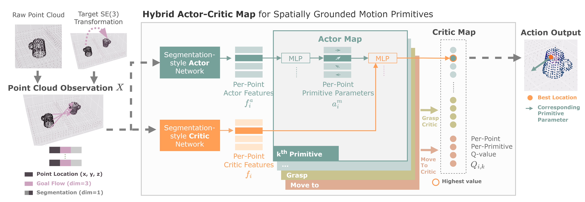

HACMan++: Spatially-Grounded Motion Primitives for Manipulation
Abstract
Although end-to-end robot learning has shown some success for robot manipulation, the learned policies are often not sufficiently robust to variations in object pose or geometry. To improve the policy generalization, we introduce spatially-grounded parameterized motion primitives. Specifically, we propose an action representation consisting of three components: what primitive type (such as grasp or push) to execute, where the primitive will be grounded (e.g. where the gripper will make contact with the world), and how the primitive motion is executed, such as parameters specifying the push direction or grasp orientation. These three components define a novel discrete-continuous action space for reinforcement learning. Our framework enables robot agents to learn to chain diverse motion primitives together and select appropriate primitive parameters to complete long-horizon manipulation tasks. By grounding the primitives on a spatial location in the environment, our method is able to effectively generalize across object shape and pose variations. Our approach significantly outperforms existing methods, particularly in complex scenarios demanding both high-level sequential reasoning and object generalization. With zero-shot sim-to-real transfer, our policy succeeds in challenging real-world manipulation tasks, with generalization to unseen objects.
Method Overview

Our method consists of a library of parameterized, \emph{spatially-grounded} motion primitives (left), consisting of a primitive type, primitive location (where the primitive will be grounded), and primitive parameters. These three components form the action space for a policy that we train with reinforcement learning. Our method learns to select a sequence of primitives (and their corresponding locations and parameters) to perform a long-horizon manipulation task. In the task shown here, the object is placed in one bin in an initial pose, and it must be moved into a second bin in a target pose. At the top, we visualize the spatial grounding for the selected primitive; for each point we visualize the learned Q-value of selecting that point in the form of heatmaps as the grounding location for each primitive.

Our method processes a point cloud to estimate a set of per-point primitive parameters \(a_i^m\) for each point \(x_i\) in the point cloud and for each primitive in our primitive set. We then compute a set of "Critic Maps" (one per primitive) which estimate the Q-value \(Q_{i,k}\) of using each primitive \(k\), grounded at each point \(x_i\), and parameterized by the estimated primitive parameters \(a_i^m\). We either sample from the Critic Map (during training) or choose the point and primitive with the highest score (during evaluation) for robot execution.
Robot Experiments
Select object:
Sim Results with Interactive Visualizations
Object: